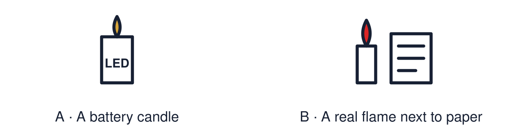

Arrival choices
Previous lesson reminder:

Start with 1 and 2. Try 3 and 4 when ready. Reading and exact scribing are available.
1 What do people do to welcome Rama and Sita home?
Support: Use the reminder strip or talk it through with an adult.
2 Which meaning fits celebration?
Support: Choose: A way of marking a special time OR Showing devotion to God or gods.
3 Is making a rangoli-style pattern in class worship?
Support: Use the model evidence anchor A or read one relevant card together.
4 Which kind of light do we use in the classroom?
Support: Give a reason when ready.
Stretch: use a precise example or explain which detail supports your answer.
Evidence cards
Read, point or listen. Keep the source label with any detail you use.
A Learning, not worship
In RE we learn about celebrations. Making a pattern or a card in class is learning. It is not worship, and nobody is asked to share a belief.
Source: Authored classroom rules
Limit: Pupils and families hold different views. Anyone can choose an equivalent task.
B Our activity
Choose one: a light-themed card, a rangoli-style pattern, a paper decoration or a symbol drawing. We use battery lights only. No real flame.
Source: Authored classroom rules
Limit: A classroom activity cannot show a whole festival.
C Rangoli-style patterns
Rangoli patterns are often bright and symmetrical. Many families make them by the door to welcome guests at Diwali.
Source: Authored RE summary
Limit: Not every family makes rangoli.
D Taking part with respect
Use the symbols carefully. Speak kindly about other people’s celebrations. Ask if you are unsure what something means.
Source: Authored classroom rules
Limit: Respect can be shown in many ways.
Shared investigation
1. Decide whether each action is respectful in our activity.
2. Say how the action could be changed if needed.
Work with a partner or adult, or use your own table. One person suggests; the other checks the evidence. Swap after one turn. Passing is allowed.
Move or match the cards
| Cards to use |
|---|
| Use a battery light, not a flame |
| Laugh at someone’s pattern |
| Ask what a symbol means before using it |
Possible labels: Needs changing / Respectful
Support: Show two choices. Read one short instruction. Point, match or say a word, then add a reason when ready.
Further challenge: Explain the difference between learning about a celebration and worship.
Supported independent task
Complete this route only. Take part respectfully in a classroom celebration activity.
1. Choose a template: card, pattern or decoration.
2. Colour or build it using the model.
3. Point to or say one thing it means.
Support: Show two choices. Read one short instruction. Point, match or say a word, then add a reason when ready. Complete the organiser one space at a time. My ___ shows ___. It means ___.
An adult may read or scribe your exact response. They should not choose the answer.
Standard independent task
Complete this route only. Take part respectfully in a classroom celebration activity.
1. Create a light-themed card, pattern, decoration or symbol drawing.
2. Add one symbol from the festival images.
3. Explain one meaning of your symbol.
Support: My ___ shows ___. It means ___.
Check the required evidence and revise one detail.
Stretch independent task
Complete this route only. Take part respectfully in a classroom celebration activity.
1. Create your piece using at least one symbol.
2. Explain the meaning of the symbol to a partner or adult.
3. Explain how your work is learning and not worship.
Support: Choose the evidence independently. Use the frame only if it helps.
Explain the difference between learning about a celebration and worship.
Exit ticket
Choose a response mode. You may give your answers privately to an adult.
Is making a rangoli-style pattern in class worship?
Which kind of light do we use in the classroom?
Support: My ___ shows ___. It means ___.
Further challenge: Explain the difference between learning about a celebration and worship.